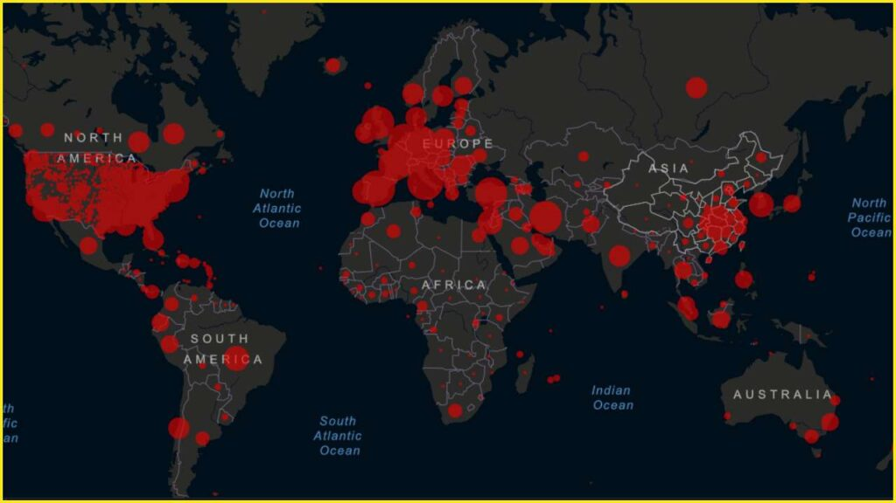

The estimation of survival outcomes for Titanic passengers based on factors such as name, age, and ticket price is intended to be undertaken in this project, employing data analysis techniques to predict who will live and who will not.

In this project, we're using SQL Server to explore the COVID-19 dataset. We're digging into the data, checking its structure, patterns, and trends. This involves running SQL queries to filter and analyze specific information. The goal is to understand how COVID-19 cases are distributed over time.

This project uses Tableau to turn COVID-19 dataset information into visual displays. Through charts and graphs, we make the data more accessible, helping to highlight trends and insights for better understanding and decision-making.
.jpeg)
In this project, the data undergoes a cleaning process. Cleaning the data involves identifying and rectifying any inconsistencies, errors, or missing values within the dataset to ensure its accuracy and reliability. This meticulous process aims to enhance the quality of the data, making it suitable for meaningful analysis and visualization in subsequent stages of the project.
In this project, we're checking how different parameters relate to each other. The goal is to understand the connections and correlations between these factors for valuable insights.
We aim to predict the prices of homes in Boston. Using factors like location, size, and bedrooms, we'll analyze patterns to create a model for estimating home prices.